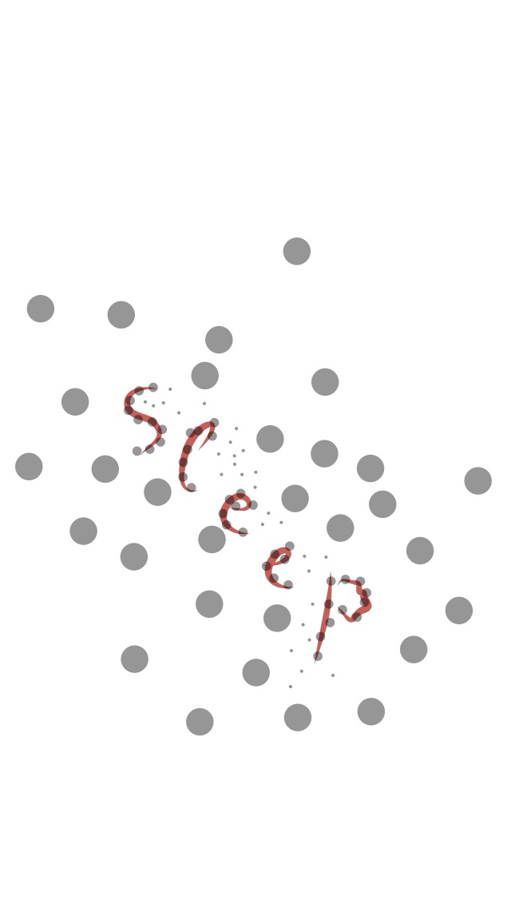

<!DOCTYPE HTML>
<html>
<head>
<meta charset="utf-8">
<title>sCHwARTz primer</title>

<style>
    pre{
        margin: 0px;
        padding: 0px;
        font-weight: bold;
    }
    
    pre.schwartz5{
        font-size: 5px;
        line-height: 5px;
    }
    
    pre.schwartz10{
        font-size: 10px;
        line-height: 10px;
    }
  
    pre.schwartz100{
        font-size: 100px;
        line-height: 100px;
    }
  
</style>
</head>

<body>
    <!--
    
    -->
    
    <script src="schwartz.js" type="text/javascript"></script>
    <script src="dat.gui.js" type="text/javascript"></script>
    <script type="text/javascript">
    var
        body    = document.getElementsByTagName('body')[0],
        outDiv = document.createElement('div'),
        schwartzOptions = {
            inverse: false,
            matrixDimensions: {
                x: 8,
                y: 12
            },
            container: outDiv,
            lineClassName: 'schwartz5',
            imgPath : 'mug.jpg'
        },
        gui;
    // end of vars
    body.appendChild(outDiv);
    
    gui = new dat.GUI();
    function reRender(value){
        var 
            schwartz = new Schwartz(schwartzOptions);
          schwartz.generateFromImage(schwartzOptions.imgPath);
        
    };
    reRender();
    
    gui.add(schwartzOptions,'inverse').onFinishChange(reRender);/**/
    gui.add(schwartzOptions.matrixDimensions,'x',2,20).step(2).onFinishChange(reRender);
    gui.add(schwartzOptions.matrixDimensions,'y',3,30).step(3).onFinishChange(reRender);
    gui.add(schwartzOptions,'lineClassName',['schwartz5','schwartz10','schwartz100']).onFinishChange(reRender);

</script>
</body>
</html>